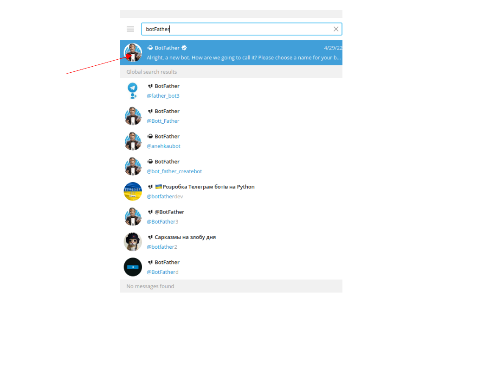
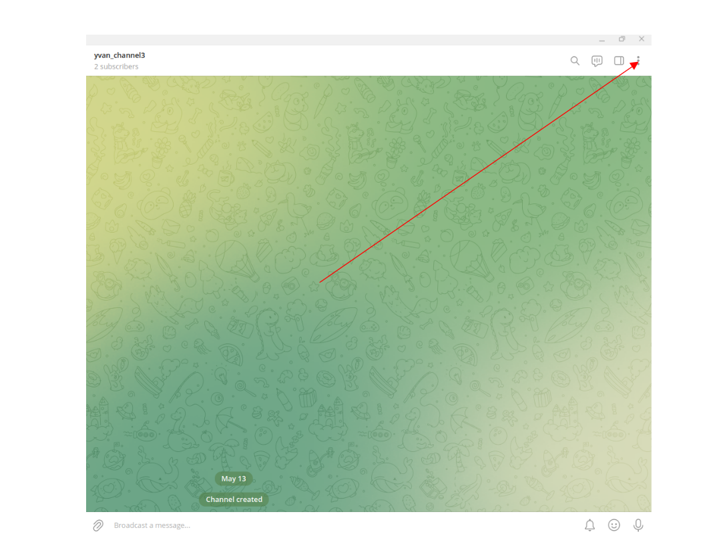
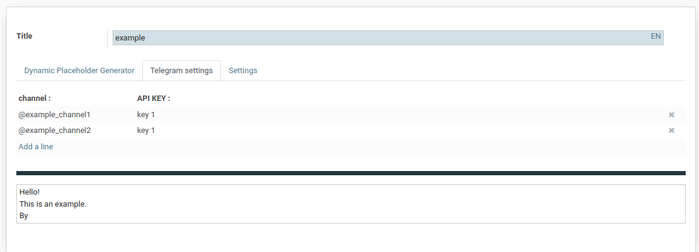
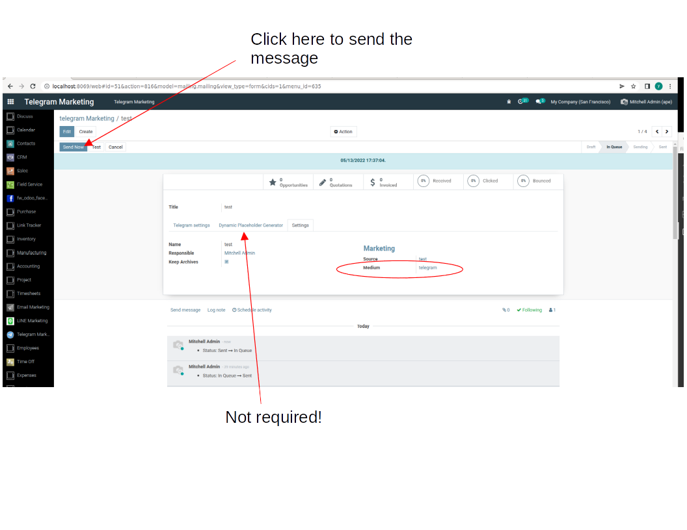

Installation
You must for beginning install Email Marketing module.
First :
- go on telegram
- in the research bar typing "BotFather"

- click on the first link
- write "/start" as message
- the bot will respond a long message
- click on newbot (or respond "/newbot")
 - type your bot name (should end by "bot")
- type your bot name (should end by "bot")
- a bot will be create with a KEY number!
- if you don't remember the KEY number, type "/mybots"
Second:
- go on telegram
- click on the option (next to the research bar)
 - click on "new channel"
- click on "new channel"
- write a name for the channel
- go in the channel option (right top corner) :

- click on "manage channel"
- put the channel public (if it's not already done )
- create the link this link is important!

 - click on administrator
- click on administrator
- add your bot as administrator
Third:
- go on odoo
- go in Telegram Marketing
- click on create
- you are not required to fill in Dynamic Placeholder Generator
- go in the Telegram settings :
-> write the link of the channel in channel (begin by "@")
-> write the key of your bot in API_Key
-> write your text in the Message field
-> if you want to put an image write the URL image field
note : you can not put a image alone and you can not put several image

- go in the Settings :
- you are required to fill the "Medium" field

- click on the button "send now" or "Put in Queue"
- you can send message to several channel
Now, you can see your message/image you send with Odoo in all the telegram channel!